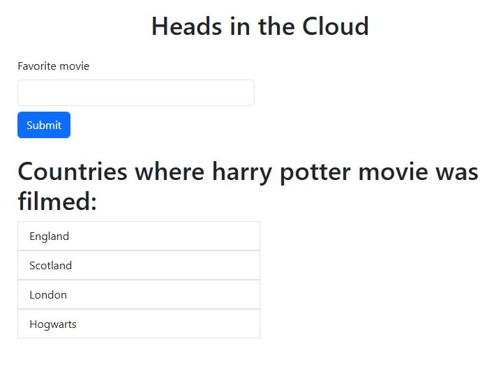
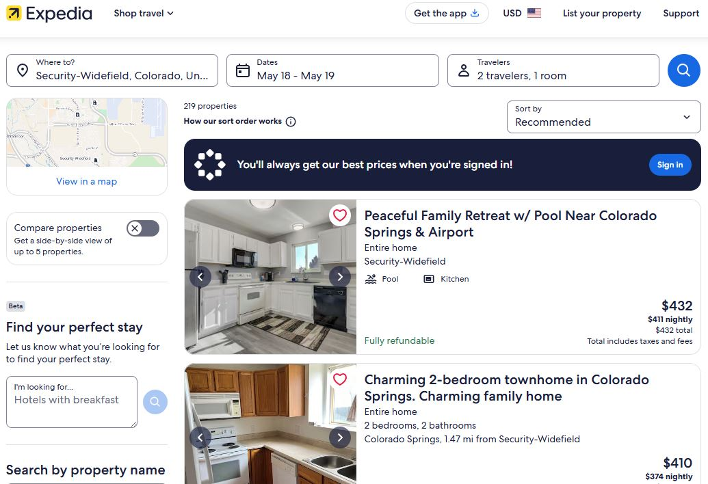
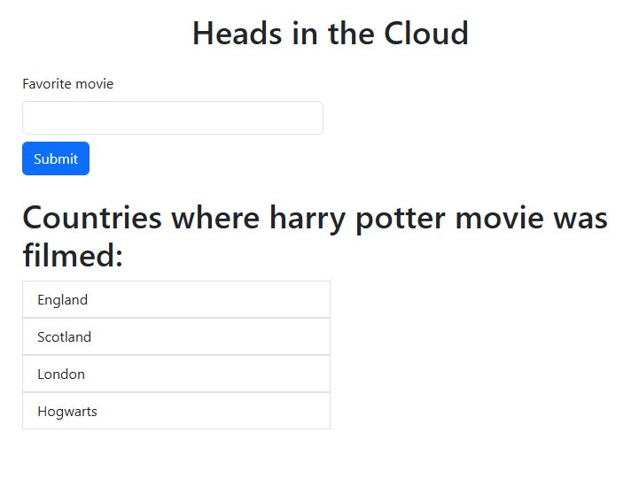
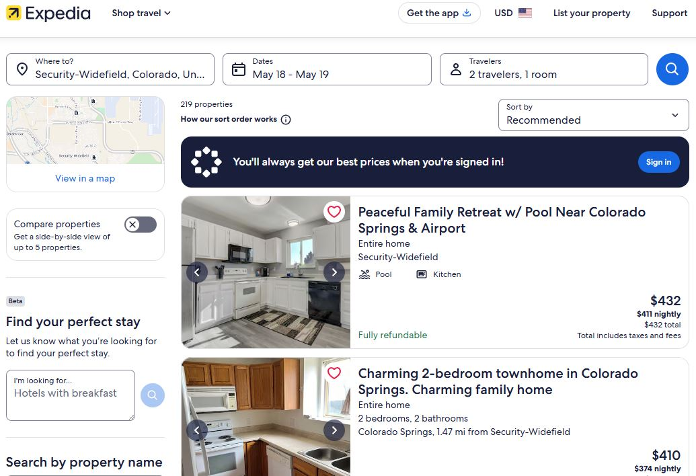

 View on GitHub
View on GitHub
Overview:
Semantic Web Explorer is an interactive visualization tool designed to help users explore and understand RDF (Resource Description Framework) data.
It provides an intuitive interface for querying, navigating, and discovering relationships between web resources using SPARQL, the query language for semantic data.
Key Features:
- Visualizes RDF triples as connected nodes and relationships.
- Accepts custom SPARQL queries to dynamically filter or highlight specific data points.
- Provides detailed information panels for each selected resource.
- Supports loading local or remote RDF datasets via endpoints.
- Integrates with Expedia: after identifying a filming location from the dataset, users can be redirected to Expedia to book a hotel nearby.
Technologies Used:
- Frontend: HTML5, CSS3, JavaScript, D3.js (for data visualization)
- Backend/Data Layer: SPARQL, RDF, JSON-LD
- Tools & Libraries: Apache Jena Fuseki (SPARQL endpoint), RDFLib
Challenges Faced:
- Designing a clean interface that can scale for complex data graphs.
- Handling large datasets while maintaining performance and responsiveness.
- Ensuring compatibility across various RDF formats and SPARQL endpoints.
Outcome:
The project showcases how semantic web data can be made interactive and user-friendly.
It demonstrates practical applications of Linked Data and serves as a foundation for building more advanced data exploration tools with real-world integrations.